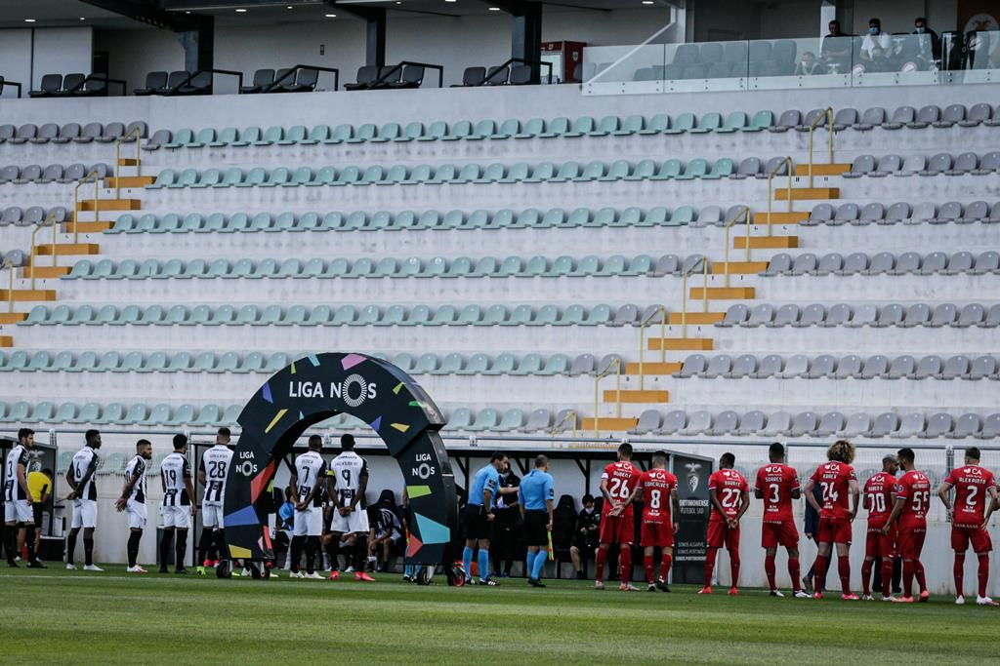

The issue is not that Generation Z does not like football. The issue is that football is still communicating as if it were speaking to a generation that no longer exists.

Almost 50% have never attended a professional sporting event in their lives.
38% do not even have a favorite club.
These numbers are not from Portugal. They are global.
But before we assume that "it's different here," let's look at home.
In the 2024/25 season, Liga Portugal broke its attendance record: 3.7 million spectators and an average of 12,294 per match.
It sounds good, until we look at the details.
If we exclude the big three, the average attendance per matchday actually fell compared to the previous season. The "record" was driven by Sport Lisboa e Benfica, Sporting Clube de Portugal, and FC Porto. Meanwhile, clubs such as CF Estrela da Amadora, Rio Ave FC, and Moreirense Futebol Clube - Futebol SAD saw their averages decline. Some first division clubs do not even reach 3,000 per game.
And there are those rowing against the tide. Vitória Sport Clube increased its average attendance. SC Braga has been doing consistent work with the local community. But they are still exceptions.
There are too many clubs in Portugal whose stadiums only fill up when one of the big clubs comes to town. And that is not a size problem. It is a connection problem.
The young fan? That fan is watching highlights on TikTok 20 minutes after the final whistle.
They follow players, not clubs. They interact with memes, not newsletters.
The problem is not that Generation Z does not like football. The problem is that football insists on communicating with a generation that no longer exists.
An Instagram post with the team photo and the result? Not enough.
An email with "March newsletter"? It does not get opened.
A ticketing campaign with a price and a date? It does not convince them.
This generation wants behind-the-scenes access. They want to feel like they know the players as people, not as EAFC cards. They want content they can share, remix, and comment on. They want the club to speak their language, on their channels, at their pace.
Some clubs abroad have already understood this.
Wolves have nearly 10 million likes on TikTok with behind-the-scenes and humorous content. Wrexham AFC turned the club itself into a documentary series.
And in Portugal? Is your local club doing anything to bring you back to the stadium?
That is not a rhetorical question. It is a question worth millions. Because the fan you fail to capture at 15 is very difficult to win back at 35.